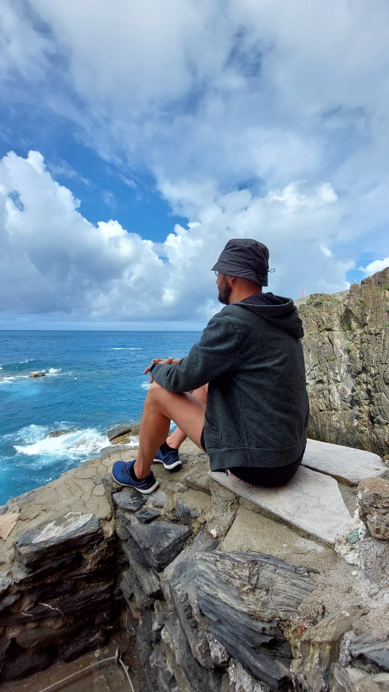

Inima lucrului
Back to Essence
O întâlnire unu-la-unu în care te ghidez să explorăm sursa a ceea ce te ține blocat și de aici să ne întoarcem acasă, la esența ta fundamentală.
Punctul de plecare
Când blocajul devine cine crezi că ești
"Nimic nu merge. M-am săturat de toate. Nu mai știu ce să fac ca să se rezolve."
Sunt momente când un blocaj crește atât de mult încât pare că acoperă totul. Te-ai săturat, ai obosit, îți vine să lași totul baltă. Și fără să-ți dai seama, începi să vorbești despre tine prin el: "așa sunt eu", "asta e situația mea", "nu se mai schimbă nimic".
Te-ai identificat cu blocajul atât de mult încât nu mai vezi că tu nu ești asta. Că dincolo de el ești încă întreg, doar că, pentru moment, nu mai poți simți asta.

Metoda
O călătorie din afară spre interior
Tot ce trăiești la suprafață, povestea, situațiile, oamenii, ce s-a întâmplat și cine a făcut ce, se strânge încet spre un singur punct.
Acel punct e o propoziție sinceră despre ce e adevărat în tine acum. Nu despre situație, nu despre ceilalți. Despre tine. Sinceritatea acelei propoziții e cheia care deschide ușa spre interior.
Până să o spui, privirea ta e îndreptată spre afară. În momentul în care o spui și o simți cu adevărat, treci printr-un punct de inflexiune. De acolo, drumul se deschide invers: spre interior, spre sursă, spre energia ținută acolo.
Ce se întâmplă după
Ce se deschide pe drumul spre casă
Simțirea
Contact direct cu ce era acoperit de poveste. Eliberare prin simțire, nu prin înțelegere.
Revelația
Sistemul tău începe singur să facă legăturile. Apar imaginile, momentele, "ah, atunci am învățat să fac așa".
Integrarea prin iubire
Aduci partea pe care ai descoperit-o într-un loc sigur, în inimă și o iubești necondiționat, exact așa cum e.
Întoarcerea la sursă
Din acea integrare te reîntorci la esența ta, locul din tine care poate iubi orice, oricând, indiferent de ce se întâmplă în afară.
Ce este
O întâlnire blândă, nu o reparație
Aceasta nu e terapie și nu înlocuiește intervenții medicale, dacă sunt necesare. Și nu pleacă de la ideea că ceva în tine e stricat și trebuie reparat.
E o întâlnire blândă cu ceea ce te-a protejat până acum. Îi vedem rolul, îi mulțumim și creăm destulă siguranță încât energia ținută în spatele lui să poată curge din nou. Nimic de forțat. Doar de însoțit, cu răbdare și grijă.
Nu trebuie să fii pregătit. Nu trebuie să știi ce cauți.
Dacă ceva în tine e atras spre liniște, sinceritate și descoperire blândă, ești binevenit aici.
Acesta este The Becoming Field